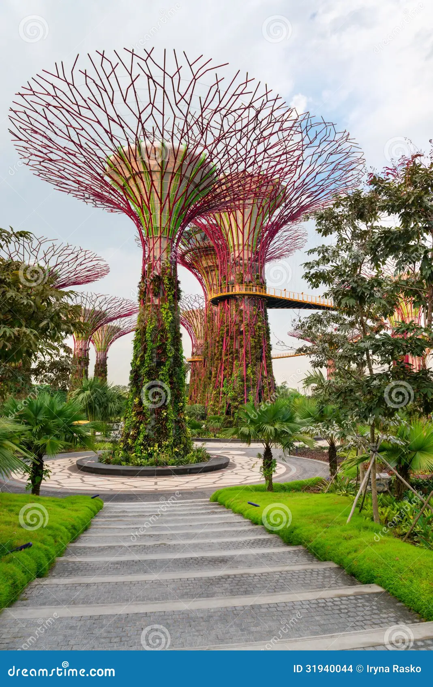
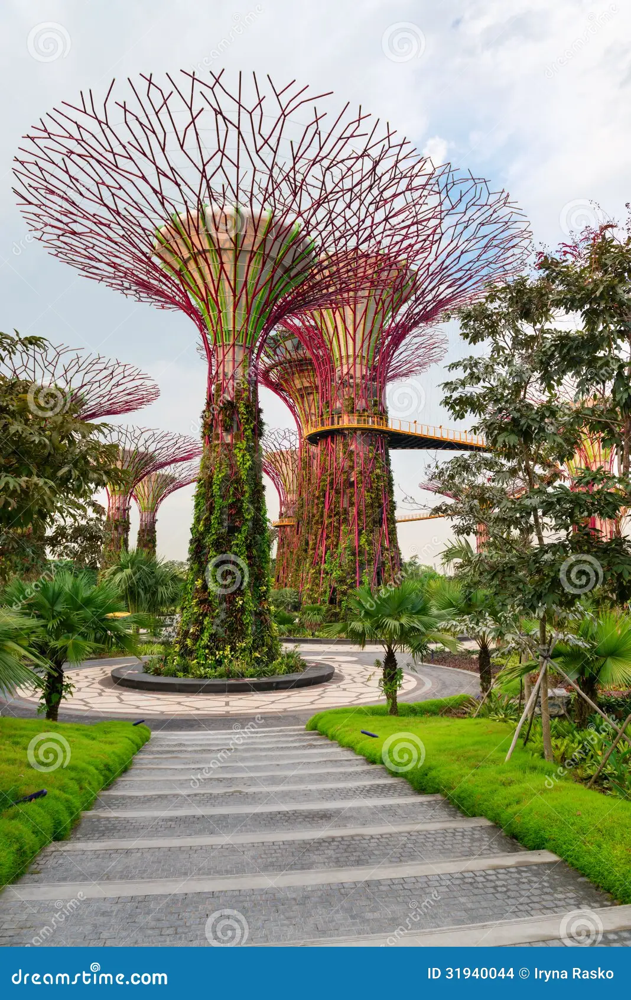
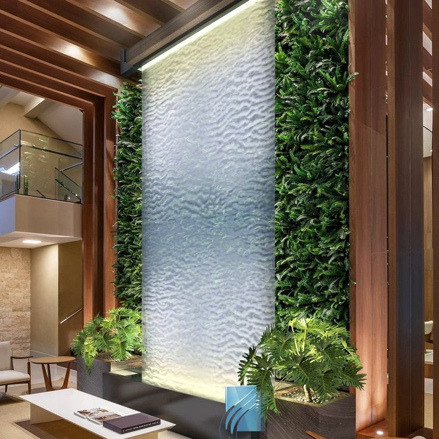
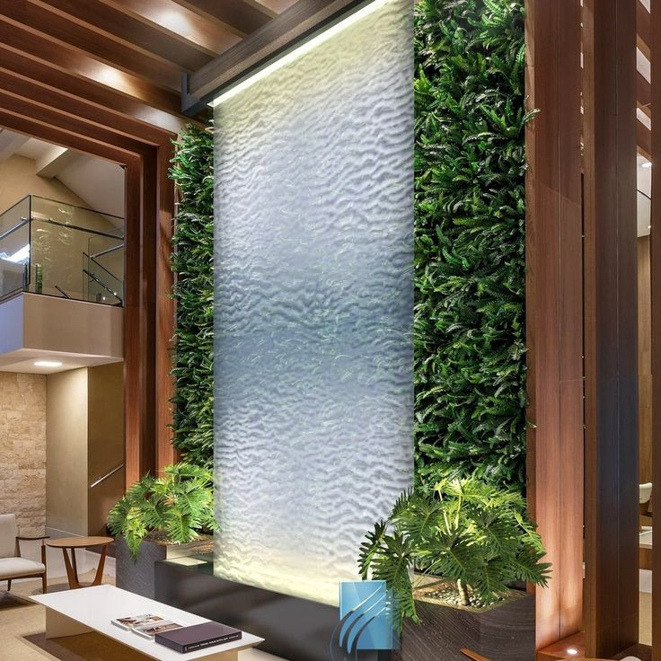

Advantages Of Singapore’s Artificial Trees
-
Advantage of Rain Barrel
Advantage Of Glass Wall Fountain
Advantage Of Fog Harvesting
Attracting visitors with their futuristic design and impressive lights and sounds during the evening. Tropical flowers and ferns climb across the steel framework, adding to the aesthetics. Temperature moderation through the large canopies, which absorb and disperse heat. Sustainable credentials, including photovoltaic panels that generate electricity from solar power. Desiccant technology: Supertrees use desiccant technology to treat humid air, reducing energy use. Sustainability: They are part of a 250-acre landscaping project called Gardens by the Bay, which is an initiative from Singapore's National Development Agency. Architectural challenges: The Supertrees were designed to stretch up to 164 feet tall and grow 200 species of flowers, ferns, and epiphytes. Solar energy collection: They collect solar energy, contributing to Singapore's energy needs.
.jpg)
.jpg) 

Reducing runoff and erosion on your property. Providing an alternative water source for landscape plants. Lowering your water bill by reducing the use of municipal water for watering plants. Conserving water and preventing runoff pollution Save money on water bills . Conserve water during drought. Reduce stormwater runoff. Provide clean water for plants Save money on water bills Even if you’re not one to worry about your environmental impact, you certainly care about the impact water use has on your wallet. When you collect rainwater, you can use it for household chores such as: ... Conserve water during drought ... Reduce stormwater runoff ... Prevent flooding and soil erosion ... Provide clean water for plants
.jpg)
.jpg)
.jpg)
.jpg)
Aesthetic appeal: Fountain walls add a visually stunning and tranquil feature to any outdoor or indoor space. Improved air quality: The mist created by the water can help to increase humidity levels and improve air quality, especially in areas with low humidity levels. Relaxation: The sound of falling water creates a calming and soothing atmosphere, making it an ideal place to relax and unwind. Increased property value: A well-designed and maintained fountain wall could significantly increase the value of a property. Energy savings: In some cases, the mist created by a fountain wall can help to cool down a space, reducing the need for air conditioning. Improved ambience: A fountain wall can create a unique and memorable atmosphere in any space.
 

Increased Water Availability Fog harvesting is a natural solution to water scarcity in areas with frequent fog periods, like coastal and mountainous regions. ... Supplement Traditional Irrigation Methods ... Environmentally Friendly Option ... Reduces Reliance ... Low-Cost Solution ... Easily Constructed and Maintained ... Potential for Sustainable Practices ...
.jpg)